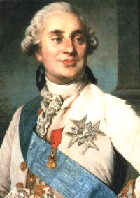

1774-1792Règne
DernierRoi Ancien Régime
ÉcusArgent
1792Chute
Louis XVI (1774-1792) est le dernier roi de l'Ancien Régime. Ses monnaies (louis d'or, écus d'argent, monnaies de billon et de cuivre) représentent les dernières émissions royales traditionnelles avant les bouleversements révolutionnaires.
À partir de 1791-1792, les types évoluent (Constitution) puis disparaissent au profit des monnaies républicaines. Les pièces de Louis XVI marquent la fin d'une époque numismatique et l'entrée dans le temps des assignats et de la Convention.
Sources : catalogues Ciani, Duplessy, Gadoury · infonumis.info
Louis d'or "au buste nu" ou "aux écus accolés"
Date : 1786 1er semestre ; Atelier : B (Rouen) ; 418 838 exemplaires
Or 917 ‰ ; 24 mm ; 7.58g (théorique 7.649g)
Tranche fleuronnée
Avers : LUD. XVI. D G. FR. - ET NAV. REX. (Louis XVI, par la grâce de Dieu, roi de France et de Navarre) ; Tête nue de Louis XVI à gauche, signé DUVIV. sur la tranche du cou ; au-dessus (Mm).
Revers : CHRS. REGN. VINC. IMPER (Mg) 1786. (Le Christ règne, vainc, commande) ; Deux écus accolés de France et de Navarre, sous une couronne ; au-dessous lettre d'atelier.
Références : C.2183 G.361 Dr.605 Dy.1707 Dr.2/615
Ecu dit "aux branches d'olivier" ou "aux lauriers"
Date : 1790, 1er semestre ; Atelier : A (Paris) ; 000 exemplaires
Argent 917 ‰ ; 41.5 mm ; 29.41g (théorique 29.488g)
Tranche : ***
Avers : LUD. XVI. D. G. FR. - ET NAV. REX. (Louis XVI, par la grâce de Dieu, roi de France et de Navarre) ; Buste de Louis XVI à gauche, portant une veste brodée, avec l'ordre du Saint-Esprit, les cheveux noués sur la nuque par un ruban. B. DUVIV. F. sur la tranche du buste ; au-dessous (Mm).
Revers : .SIT NOMEN DOMINI - A - BENEDICTUM (Mg) 1790 (Béni soit le nom du Seigneur) ; Ecu de France ovale, couronné entre deux branches d'olivier.
Références : C.2187 S.126 G.356 Dr.606
Dixième d'écu "aux branches d'olivier"
ou "aux lauriers"
Date : 1785 ; Atelier : A (Paris) ; 00 exemplaires
Argent 917 ‰ ; 21.5 mm ; 2.95g (théorique 2.948g)
Tranche cordonnée
Avers : LUD. XVI. D. G. FR. - ET NAV. REX. (Louis XVI, par la grâce de Dieu, roi de France et de Navarre) ; Buste de Louis XVI à gauche, portant une veste brodée, avec l'ordre du Saint-Esprit, les cheveux nouées sur la nuque par un ruban. DUVIV. sur la tranche du buste ; au-dessous (Mm).
Revers : .SIT NOMEN DOMINI - (atelier) - BENEDICTUM (Mg) (millésime). (Béni soit le nom du Seigneur) ; Ecu de France ovale couronné, entre deux branches d'olivier.
Références : G.353 C.2191 Dr.609 Dy.1711 Drs.620
Date : 1785 ; Atelier : A (Paris) ; 00 exemplaires
Argent 917 ‰ ; 21.5 mm ; 2.95g (théorique 2.948g)
Tranche cordonnée
Avers : LUD. XVI. D. G. FR. - ET NAV. REX. (Louis XVI, par la grâce de Dieu, roi de France et de Navarre) ; Buste de Louis XVI à gauche, portant une veste brodée, avec l'ordre du Saint-Esprit, les cheveux nouées sur la nuque par un ruban. DUVIV. sur la tranche du buste ; au-dessous (Mm).
Revers : .SIT NOMEN DOMINI - (atelier) - BENEDICTUM (Mg) (millésime). (Béni soit le nom du Seigneur) ; Ecu de France ovale couronné, entre deux branches d'olivier.
Références : G.353 C.2191 Dr.609 Dy.1711 Drs.620
Vingtième d'écu posthume au nom de Louis XV
Date : 1779 2e semestre ; Atelier : A (Paris) ; 176.070 exemplaires
Argent 917 ‰ ; 17 mm ; 1.41g (théorique 1.474g)
Tranche cordonnée
Avers : LUD. XV. D. G. FR. - ET NAV. REX. (Louis XV, par la grâce de Dieu, roi de France et de Navarre) ; Buste de Louis XV à gauche, drapé et lauré ; au-dessous (Mm).
Revers : .SIT NOMEN DOMINI - A - BENEDICTUM (Mg) 1779 (Béni soit le nom du Seigneur) ; Écu de France ovale couronné, entre deux branches d'olivier.
Références : C.2193 G.351 Dr.610 Dy.610 Dr.2/622
Sol dit "à l'écu"
Date : 1791 ; Atelier : A (Paris) ; 000 exemplaires
Cuivre ; 30 mm ; 11.01g (théorique 12.237g)
Tranche lisse
Avers : LUDOV. XVI. - D. GRATIA (Louis XVI, par la grâce de Dieu) ; Tête de Louis XVI à gauche, les cheveux noués par un ruban ; au-dessous (Mm).
Revers : (Mg) FRANCIÆ ET - A - NAVARRÆ REX 17-91 (roi de France et de Navarre) ; Ecu de France couronné.
Références : C.2194 G.350 Dy.1714
Demi-sol dit "à l'écu"
Date : 1778 ; Atelier : & (Aix) ; 000 exemplaires
Cuivre ; 25 mm ; 6.28g (théorique 6.118g)
Tranche lisse
Avers : LUDOV. XVI. - D. GRATIA (Louis XVI, par la grâce de Dieu) ; Tête de Louis XVI à gauche, ceinte d'un bandeau ; (Mm) sous la tête.
Revers : (Mg) FRANCIÆ ET - & - NAVARRÆ REX 17-78 (roi de France et de Navarre) ; Ecu de France couronné.
Références : C.2196 G.349 Dr.613 Dy.1715
Liard dit "à l'écu"
Date : 1786 ; Atelier : AA (Metz) ; 000 exemplaires ; Degré de rareté : R1
Cuivre ; 21 mm ; 2.75g (théorique 3.058g)
Tranche lisse
Avers : LUDOV. XVI. - D. GRATIA. (Louis XVI, par la grâce de Dieu) ; Tête de Louis XVI à gauche, les cheveux noués par un ruban ; au-dessous (Mm).
Revers : (Mg) FRANC. ET - AA - NAVARR. REX. 17-86 (roi de France et de Navarre) ; Ecu de France couronné.
Références : C.2197 G.348 Dr.614 Dy.1716 Dr.2/627